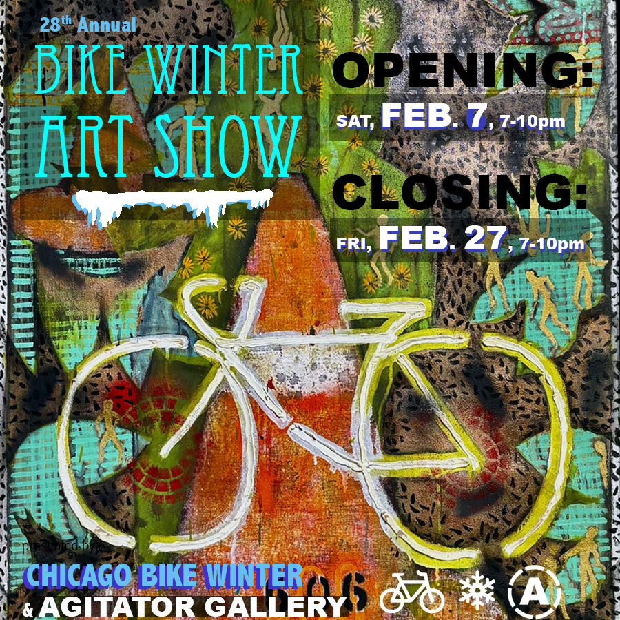

Bike Winter Art Show 2026: Closing
Closing Reception :: Friday, Feb 27*, 7–10 pm * Critical Mass ride from Daley Plaza at 6pm ends at the exhibition. Bike with them to the closing!
Last chance to meet the artists and see their creative artworks, iconography and object ephemera. Chicago’s ARTS and ADVOCACY communities celebrate, revere, lionize, criticize and focus on THE BICYCLE as symbol of activism, invention, agency, community, strategy and sustainable transportation.
Chicago Bike Winter is a loose knit advocacy group dedicated to promoting the joys, rights and opportunities for Chicagoans to bike the city’s roads, streets, trails and byways throughout the year (and especially provides resources to encourage biking in Winter months.) The Bike Winter Art Show (BWAS) has been presented in various studios, lofts and galleries since 1997.